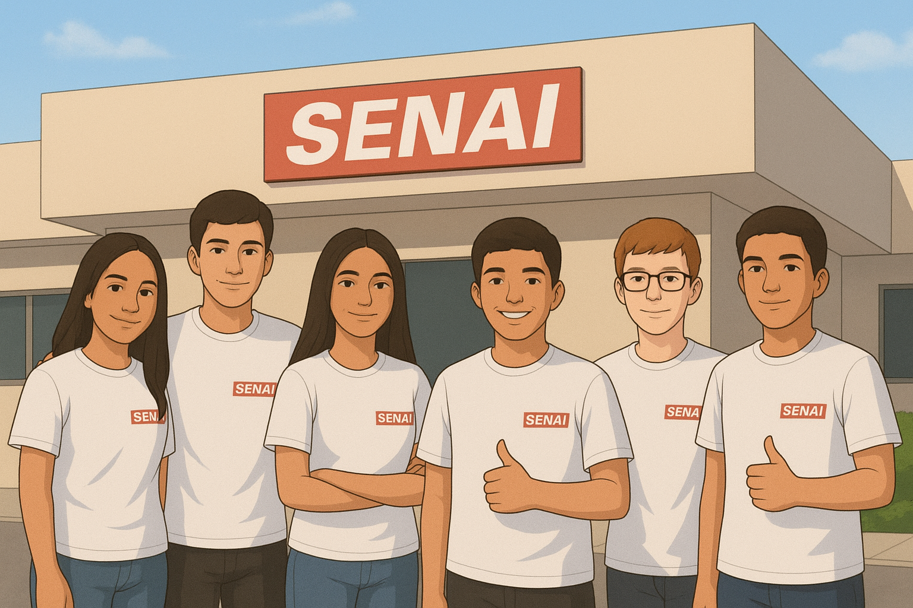

Créditos – Derbox
O aplicativo Derbox é o resultado do trabalho árduo e da dedicação de um time incrível de criadores e desenvolvedores que compartilharam sua visão e paixão por transformar a maneira como as pessoas interagem com o conteúdo de entretenimento. O projeto foi idealizado, desenvolvido e aperfeiçoado por: Danilo, Rebeca, Yasmin, Victor, Pedro e Emilio, cada um trazendo sua expertise única para construir uma plataforma intuitiva, eficiente e acolhedora.
Graças à colaboração e ao esforço conjunto desses profissionais talentosos, o Derbox evolui constantemente para oferecer aos usuários uma experiência de navegação mais rica e uma maneira eficaz de compartilhar e descobrir novas opiniões sobre filmes, séries, livros, jogos e muito mais.
Sobre o Projeto
O Derbox foi desenvolvido com um objetivo claro: criar uma plataforma onde as críticas e resenhas de usuários se tornem uma ferramenta poderosa para quem busca tomar decisões mais informadas ao consumir conteúdo de entretenimento. O aplicativo nasceu da ideia de ajudar as pessoas a se orientarem melhor em um mundo saturado de opções, onde a escolha certa pode ser desafiadora.
Mais do que um simples agregador de avaliações, o Derbox é uma verdadeira comunidade de pessoas que buscam compartilhar suas experiências de maneira autêntica e confiável. Cada usuário tem o poder de contribuir com suas próprias opiniões, ajudando outros a explorar novas opções e a se envolver com conteúdo de qualidade. Nossa missão é criar um ambiente onde a sinceridade e a troca de ideias sejam sempre valorizadas.
Acreditamos que cada opinião conta e que a diversidade de experiências é o que torna o Derbox um espaço único, onde as pessoas podem se sentir seguras ao tomar suas decisões de entretenimento com base no que realmente importa: as experiências reais de outros usuários como elas.
Com essa proposta em mente, buscamos constantemente aprimorar a plataforma e fornecer ferramentas que facilitem a troca de opiniões e a descoberta de conteúdos relevantes e de qualidade.
© 2025 Derbox - Todos os direitos reservados. Agradecemos a todos que fazem parte dessa jornada, seja como usuário, desenvolvedor ou colaborador. Juntos, tornamos o Derbox um espaço mais dinâmico e útil para todos os apaixonados por entretenimento!